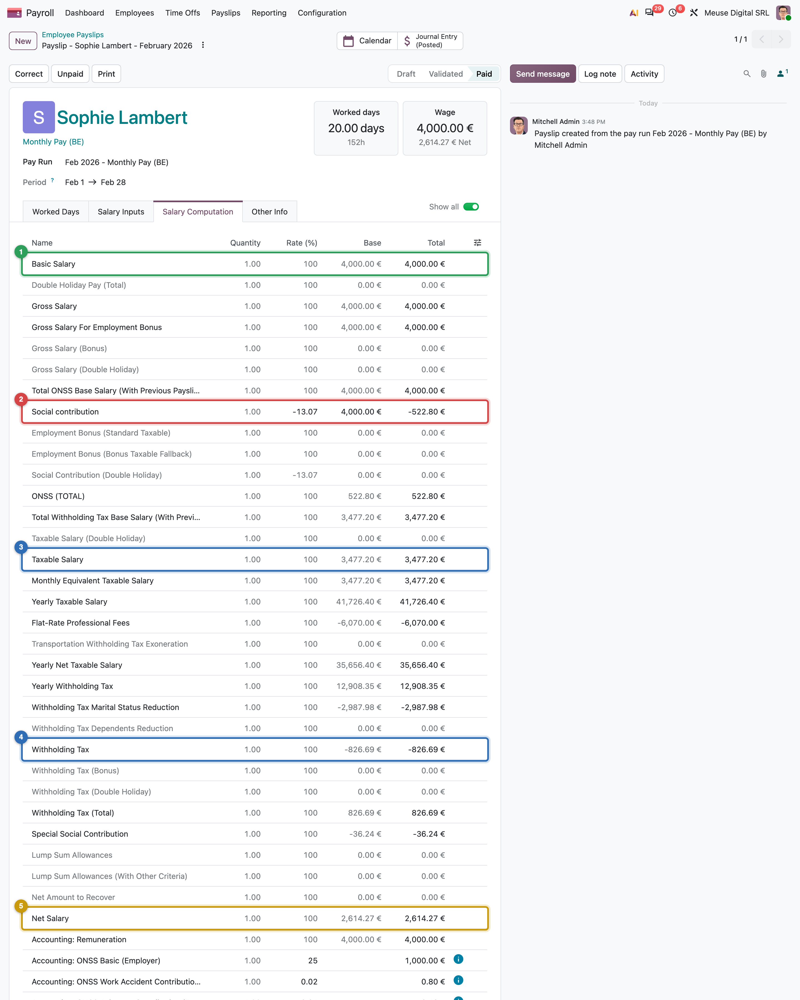

Researching a new country
From the official gazette to a golden payslip: a source hierarchy, a template and a list of questions
- Rank payroll sources in any country and know which one wins
- Fill the research template for a country and map each row to an Odoo target
- Run the template backwards on an existing module to find gaps and risks
- Handle an UNVERIFIED item: write it down, pick a default, ask, and keep it visible
- Build golden payslips from an independent calculation, and read the differences
Sales says: "We need payroll for country X by January." Nobody has read its tax code. Code from a provider's blog and you will discover in October that the tables change on 1 November and the tax office wants one signed file per payslip. Research is not a phase you finish; it is a loop that ends in numbers you can test.
The research loop
Researching a country is a loop of four steps, run again every time the numbers disagree. The rest of the chapter takes them one by one.
the numbers
match
The examples come from this book's own loop on Belgium.
The source hierarchy
When two sources disagree, the higher one wins. Always write down which level a number comes from.
FIT ruleLevel 3 deserves attention: an official file or API can be loaded by the module instead of copied by a developer (Chapter 11), and a file specification is a legal source in its own right. Belgium's tax office publishes a version history of its withholding rules, listing every amending decree.2
Common pitfall
Treating the text as the whole truth. A rule for "income paid from 1 August" does not say what to do with a July salary paid on 3 August. Separate what the text says from what practice does, and note which one each number comes from.
The research template
Copy this table for each country, one row per axis of Chapter 9 (frequencies, earnings, time, payment and the others follow the same pattern). The last two columns turn research into work: where it goes in Odoo, and how much to trust it.
| Topic | Question to answer | Typical Odoo target | Source level |
|---|---|---|---|
| Structures | which payments need their own payslip | hr.payroll.structure records |
1–2 |
| Contributions | funds, rates, bases, caps | rules + dated parameters | 2–3 |
| Income tax | method, tables, family situation | rules + parameters, version fields | 2–3 |
| Leavers | notice, severance, final pay | structure + departure flow | 1–2 |
| Declarations | each filing, period, deadline, format | declaration model, export | 2–3 |
Two examples: one filled from the law, one filled backwards from an existing module.
Example 1: Belgium, filled from the law (excerpt)
| Topic | Rule (2026) | Source (level) | Odoo target | Status |
|---|---|---|---|---|
| Employee social security | 13.07 % | social-security instructions (2) | downloaded rate parameter | VERIFIED |
| Withholding method | annualise, flat expenses, scale, reductions, ÷ 12 | tax office's key formula (2) | rule chain + helpers | VERIFIED |
| Proration of a joiner's month | no statutory method | none (practice) | worked-days valuation | UNVERIFIED |
| Sector end-of-year premium | one monthly salary, pro rata | accountants' federation (4) only | separate structure | UNVERIFIED |
Example 2: Mexico, run backwards from l10n_mx_hr_payroll
Here the module exists and the question is "where does it do this?". The status column says what the code shows; the law itself was not checked for this book.
| Topic | What the module does | Odoo target | Status |
|---|---|---|---|
| Frequencies | seven, from daily to bi-monthly | _get_selection_schedule_pay |
in module |
| Contributions | on the integrated daily wage, capped at 25 × UMA | SBC rule |
in module; the cap is hard-coded (see below) |
| Income tax | period tables | ISR, l10n_mx_isr_tables |
in module |
| Leavers | severance and final settlement | — | gap |
Running the template backwards found one gap (no severance flow) and one risk: the module declares a parameter for the 25 × UMA cap but the SBC rule writes 25 in its code, so the parameter is never read.
In practice
Run the template backwards on a module before you review or extend it. An empty "Odoo target" cell is a gap; an UNVERIFIED status is a risk.
Handling an UNVERIFIED item
The Belgian research ended with sixteen UNVERIFIED items,3 which is normal. What matters is how each is handled.
| Item | Default chosen | What happened next |
|---|---|---|
| Closure-fund rate (web page unreadable) | left out of the calculation | Odoo imports it from the official rate file: a machine-readable file answered what a web page could not |
| Proration of Yannick's March (no statutory method) | working days | Odoo uses a third method: question for the expert |
Key idea
An UNVERIFIED item is not a failure; a hidden one is. Give each a default, mark it wherever the number is used (docs, comments, tests), and tie it to a question with an owner. None should block the build; all should block the release.
Questions for a payroll expert
Research ends where the text is silent. Collect the questions, each with a default and a design consequence, so the answer changes data, not architecture. The same families come up everywhere:
| Question family | Example | If the answer differs |
|---|---|---|
| Which proration method? | working days or a fixed daily rate? | another worked-days valuation |
| Which date decides? | does a July salary paid in August get the August rate? | the rule passes the payment date to the lookup (Chapter 11) |
| What enters a base? | is the pro-rata premium in the indemnity base? | one category added to a base |
| How is it rounded? | half-up at every step, or down? | one float_round; one cent on many payslips |
Golden payslips
A test needs an expected value. If that value comes from Odoo itself, the test only proves that Odoo agrees with Odoo. A golden payslip is a payslip whose every line was computed outside Odoo, from the law, by something that does not share Odoo's code. When Odoo's payslip matches it line by line, the localization is right for that case; when it does not, one of the two is wrong, and you know exactly which line to look at.
How to get one:
Worked example: Mélanie and Marie, calculator against Odoo
| Line | Mélanie, calculator | Mélanie, Odoo | Marie, calculator | Marie, Odoo |
|---|---|---|---|---|
| Gross salary | 4,000.00 | 4,000.00 | 7,500.00 | 7,500.00 |
| Employee social security | 522.80 | 522.80 | 980.25 | 980.25 |
| Car benefit in kind | — | — | 148.57 | 151.42 |
| Taxable salary | 3,477.20 | 3,477.20 | 6,668.32 | 6,671.17 |
| Withholding tax | 826.70 | 826.69 | 1,770.92 | 1,750.15 |
| Net | 2,614.26 | 2,614.27 | 4,663.91 | 4,684.68 |
October 2026 payslips.4,5 Where both agree, the payslip is correct. Where they differ, find the cause and take it to the expert: Odoo rounds the monthly tax down where the official formula rounds half up (Mélanie's cent),1 spreads the car benefit by days (Chapter 2), and deducts a transport exemption (Chapter 4).

Common pitfall
Generating the "expected" values by running Odoo and pasting the output into the test. That test can never fail for a wrong rule, only for a changed one. The first snapshot of each case must be checked against an independent source (Chapter 21).
Around the world
- MX: tests write the hand computation in a comment next to each expected value.
- US: the
FITrule quotes the tax office's worksheet in its comments. - BE: JSON snapshots hold the expected lines of large payslips.
- NL: no test reaches the upper tax bands.
Summary
- Research is a loop: scope, read, fill the template, list the UNVERIFIED items, ask, compute golden payslips, build, compare.
- Rank sources: law, administration, official tools and data, professionals, press. The higher level wins; official files and APIs are sources a module can load.
- One template row per topic, with its source level, its Odoo target and a status. Run it forwards from the law, or backwards on an existing module to find gaps and risks.
- An UNVERIFIED item gets a default, stays visible wherever it is used, and is tied to a question with an owner.
- Expert questions fall into families (proration, deciding date, base, rounding), each with a default and a design consequence.
- Golden values come from an independent calculation that first reproduces official examples.
-
SPF Finances (Belgian tax office), key formula from 1 January 2026 (n° 3: every amount rounded to the cent): https://www.minfin.fgov.be/myminfin-web/pages/public/fisconet/document/389035ca-432e-422b-859d-2d32fbdaa4cf. ↩
-
SPF Finances, Annex III AR/CIR 92 version history: https://www.minfin.fgov.be/myminfin-web/pages/public/fisconet/document/439228c6-67bb-4e75-a9e1-4cabe4dc62ec. ↩
-
Research notes
research/belgium_law.md, sections 11 (UNVERIFIED items) and 12 (open questions). ↩ -
Independent calculator,
research/numbers_be_calc.md, sections 2, 4 and 10.8. ↩ -
Payslips computed by Odoo master on the demo database,
research/numbers_be.md, sections 1 and 2. ↩